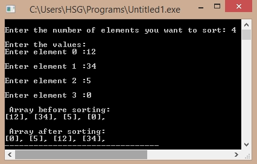

/*C Program for QuickSort*/
#include<stdio.h>
void sort(int elements[], int left, int right);
int elements[10];
int main()
{
int i, n;
printf("\nEnter the number of elements you want to sort: ");
scanf("%d",&n);
printf("\nEnter the values: ");
for (i = 0; i < n; i++)
{
printf ("\nEnter element %i :",i);
scanf("%d",&elements[i]);
}
printf("\n Array before sorting:\n");
for (i = 0; i < n; i++)
printf("[%i], ",elements[i]);
printf ("\n");
sort(elements, 0, n - 1);
printf("\n Array after sorting:\n");
for (i = 0; i < n; i++)
printf("[%i], ", elements[i]);
}
void sort(int elements[], int left, int right)
{
int pivot, l, r;
l = left;
r = right;
pivot = elements[left];
while (left < right)
{
while ((elements[right] >= pivot) && (left < right))
right--;
if (left != right)
{
elements[left] = elements[right];
left++;
}
while ((elements[left] <= pivot) && (left < right))
left++;
if(left != right)
{
elements[right] = elements[left];
right--;
}
}
elements[left] = pivot;
pivot = left;
left = l;
right = r;
if (left < pivot)
sort(elements, left, pivot - 1);
if (right > pivot)
sort(elements, pivot + 1, right);
}
Output:
